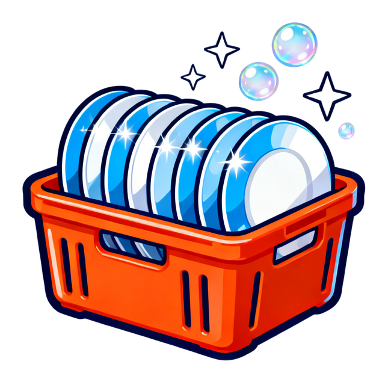
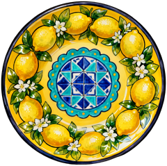
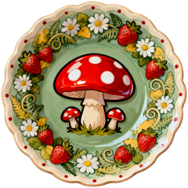

Bulaşık bulmacası · Dish sorting puzzle

Destek
DishPop, bulaşıkları doğru kasalara dizip makineye gönderdiğin tek mekanikli bir mantık bulmacasıdır. Sorun, öneri ve geri bildirimlerin için bize yaz:
E-posta: contact@appentain.com
Genelde 2 iş günü içinde yanıt veriyoruz. Yazarken cihaz modelini, iOS sürümünü ve mümkünse ekran görüntüsünü eklersen daha hızlı çözeriz.


Porselen Bahçesi · Amalfi Limonu · Cottagecore
Sık sorulan sorular
Oyun internetsiz açılmıyor
DishPop internet bağlantısı gerektirir. Wi-Fi veya mobil verinin açık olduğundan emin olup "Yenile"ye dokun.
Canım bitti, ne yapabilirim?
Canlar zamanla kendiliğinden dolar. Beklemek istemiyorsan can ekranındaki kısa reklamı izleyerek anında +1 can alabilirsin.
Bir sonraki sezon kilitli
Yeni sezon için önceki bölümlerden belirli sayıda yıldız toplamak gerekir. Eksik yıldızlı bölümleri tekrar oynayarak kilidi açabilirsin.
İlerlemem başka cihaza geçer mi?
Hayır. DishPop hesap kullanmaz; ilerleme yalnızca cihazında saklanır. Uygulamayı silmek ilerlemeyi de siler.
Reklamları nasıl kişiselleştirmeden gösteririm?
Ayarlar > Reklam tercihi bölümünden seçimini değiştirebilirsin. iOS'ta Ayarlar > Gizlilik ve Güvenlik > Takip bölümü de geçerlidir.
Verilerimi nasıl sildiririm?
Ayarlar > Gizlilik > "Veri silme isteği" ile ölçüm verilerinin silinmesini isteyebilirsin. Ayrıntılar için gizlilik politikasına bak.
Support
DishPop is a single-mechanic logic puzzle: sort the dishes into the right racks and send them to the dishwasher. For bugs, suggestions and feedback, write to us:
E-mail: contact@appentain.com
We usually reply within 2 business days. Including your device model, iOS version and a screenshot helps us fix things faster.
Porcelain Garden · Amalfi Lemon · Cottagecore
Frequently asked questions
The game won't open without internet
DishPop requires an internet connection. Make sure Wi-Fi or mobile data is on, then tap "Retry".
I'm out of lives
Lives refill over time. If you don't want to wait, watch the short ad on the lives screen to get +1 life instantly.
The next season is locked
Each new season needs a number of stars from earlier levels. Replay levels with missing stars to unlock it.
Does my progress transfer to another device?
No. DishPop has no accounts; progress is stored only on your device. Deleting the app deletes your progress.
How do I turn off personalized ads?
Change your choice in Settings > Ad preference. iOS Settings > Privacy & Security > Tracking also applies.
How do I delete my data?
Use Settings > Privacy > "Request data deletion" to have analytics data deleted. See the privacy policy for details.